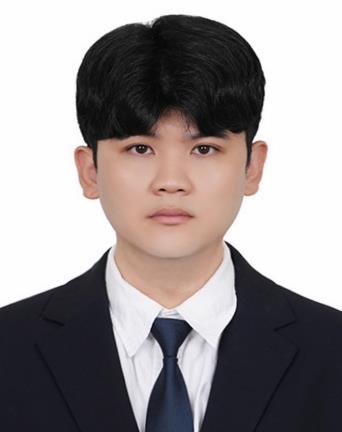

Dongwoo Lee / 이동우
3D Computer Vision · Robotic Manipulation · VLA Policy Learning
M.S. in Mechanical and Information Engineering, University of Seoul
About
안녕하세요. 로봇이 현실 환경을 인지하고 스스로 작업할 수 있도록 3D Perception과 Robot Manipulation을 연구·개발하고 있습니다. 석사과정에서는 관절형 물체의 6D Grasp Pose Estimation 및 센서 융합을 다뤘고, 2026년에는 실환경 Vision-Language-Action (VLA) 기반 Piece Picking, 데이터 수집·학습 및 정책 평가 파이프라인으로 관심 분야를 확장했습니다.
Grasp Pose Estimation
& Robot Learning
Robotic Manipulation
이 페이지는 제공된 2025 포트폴리오와 공유된 2026 프로젝트 정보를 기반으로 한 목업입니다. 소속, 회사명, 공개 가능한 성과 및 링크는 최종 배포 전에 확인해야 합니다.
Education
University of Seoul · M.S. in Mechanical and Information Engineering
Robotics Laboratory · Advisor: Prof. Myeonjung Hwang
Thesis: Grasp Pose Estimation of Articulated Objects Based on Semantic and Geometric Feature Fusion
Tech University of Korea · B.S. in Mechanical Design Engineering
Professional Experience
Industrial Robotics · AI / Robot Perception & Policy Development
2026 · Real-world Piece Picking, VLA training & evaluation, 3D perception pipeline
회사 명칭 및 재직 기간은 공개 범위 확인 후 반영 예정
Korea Institute of Industrial Technology · Research Appointment
Research-related employment (as listed in the 2025 portfolio)
Publications
Grasp Pose Estimation of Articulated Objects Based on Semantic and Geometric Feature Fusion
IEEE Access · Accepted, 2026
CLAHE를 이용한 딥러닝 기반 밝기 적응형 객체 분할
제어로봇시스템학회 논문지 · 2025
Brightness Adaptive Image Segmentation Using Luminance Histogram Equalizing in YUV Color Space
ICCAS · 2024
Estimating the 3D Location of the Burr for Robotic Deburring Task
ICRA · Late Breaking Poster, 2024
대표 연구 성과만 표시했으며 전체 논문·학회 실적은 원본 PDF를 참고할 수 있습니다.
Research Projects
Other Activities
ICRA 2024 · Robot Grasping and Manipulation Competition
Cloth Manipulation Competition · Grasp Point Estimation
Autonomous Robot Car Race
Autonomous mobile robotics competition
NVIDIA DLI Deep Learning Workshop · DYROS Robotics Bootcamp
Robotics & deep learning training